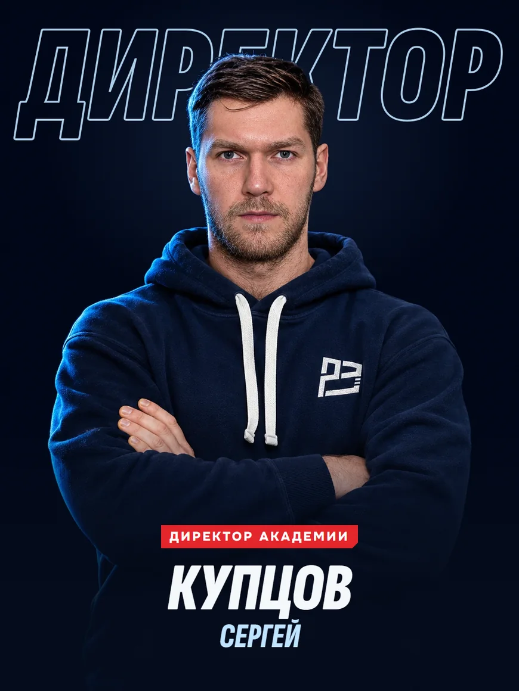

Директор академии · президент Федерации хоккея Анапы
Сергей Сергеевич Купцов
Больше 400 матчей в профессиональной карьере. Играл в КХЛ за «Югру», «Северсталь» и «Нефтехимик». Руководит академией и развивает детский хоккей в Анапе как президент городской федерации.
400+матчей в профессиональной карьере
КХЛ«Югра», «Северсталь», «Нефтехимик»
ФХАпрезидент Федерации хоккея Анапы
Вопросы о записи и занятиях: +7 (982) 672-92-92